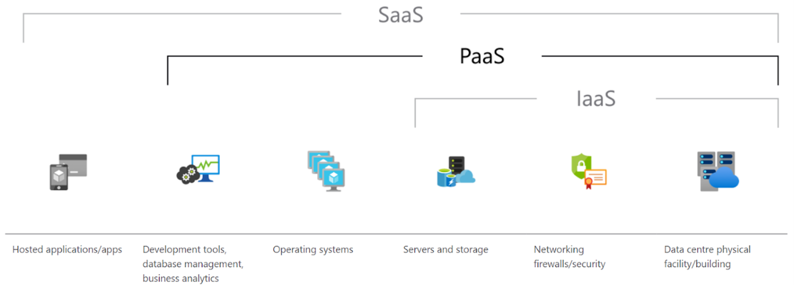

What is Clouds, Services and Servers?
Cloud computing in simple terms, is the outsourcing of computer system resources over the internet. These resources may include the server, storage, networking configurations, data centres, operating system (OS), development tools, database management, business analytics, all the way to the hosted applications. These are typically offered as pay-as-you go services, depending on the requirements and expectations for the user.
Cloud computing service providers such as, Amazon Web Services (AWS), Google Cloud Platform, and Microsoft Azure offer many different types of cloud services within their range, though we can distinguish these into three specific models: IaaS, SaaS, and PaaS.

‘Infrastructure as a Service (IaaS)’ allows businesses to offload logistical costs of running an on-premises data centre by providing the data centre, the servers and storage, and secure networking capabilities. IaaS utilises auto-scaling, i.e., if a user experiences an increase in activity, therefore requiring more technology, IaaS can provide more servers. Alternatively, the process can occur with downscaling as required.
‘Software as a Service (SaaS)’ abstracts from the user all implementations of a packaged cloud-based software. SaaS utilization examples include Gmail, OneDrive, and Microsoft Office 365. The user will usually pay subscription fees to access SaaS applications.
‘Platform as a Service (PaaS)’ provides a centre offering that falls between IaaS and SaaS. It often uses Amazon, Microsoft, or Google’s IaaS but provides users with the OS and application stack needed for development and deployment environment in the cloud. This option is ideal for most developers who want to host their application as a server, but are less concerned about how it communicates, balances loads, and so on. The downside, however, is the developer won’t necessarily know how to solve a problem if it occurs within the platform provider.
There are key advantages that the cloud service has over a traditional computing service, such as the scalability, storage, data security, data loss protection, and ongoing maintenance:
Scalability
Cloud computing allows you to pay per how much is nominated to have access to and is generally easier to size up or down when required. Additionally, maintenance costs of the cloud are either not applicable or is usually absorbed in the ongoing cost of the cloud service.
In contrast to an on-premises infrastructure arrangement, an initial investment with ongoing maintenance costs applies run and maintain efficiently. Though downsizing on-premises infrastructure is possible, the process can be at a loss and a timely exercise to complete.
Server Storage
Server storage is provided through the cloud provider, meaning that costs associated with the storage of such infrastructure is significantly reduced for the user. The cloud provider can leverage economies of scale to their advantage, whilst the user benefits from costs associated with the owning, upkeep and running their own server spaces and storage.
Data security
Traditional computing may offer varying levels of data security, however in comparison to cloud services, the security can be significantly lower, therefore easier to infiltrate, causing damage or disruptions to the applications, servers, and any interaction with the targeting server. Cloud computing services are able to employ specialised data security personae to monitor, maintain and build upon their data security as a key advantage over its rivals.
Data loss
In the events of emergency, disasters, or any event that can cause damage or disruptions to the integrity of the data, can have significant ripple effects; services depend on the data being able to be received, edited, and stored back in large volumes.
Cloud services generally have robust backup measures in place to ensure data is protected and available, again easier to achieve given the scales that a cloud provider may have. For a small or individual user, loss of data could be detrimental to their operation, as well as limited, such as on-site back ups that do not always ensure protection.
Ongoing Maintenance
The upkeep, maintenance, and ongoing costs for servers can be significant to a cash flow. Further this, ensuring that the equipment is up to date and working efficiently to deliver the required services. Specialised staff or contracted workers are generally required to perform this maintenance, which can increase the overall investment when infrastructure is on-site.
Cloud computing can leverage their business in the direction of being able to ensure optimal delivery and services, by employing teams of resources to constantly monitor and adjust for the best-health of the servers and delivery to the end user.
What is the likely impact?
What is the likely impact? Environmental Impact In terms of the environmental impact, the cloud has the potential to be a positive development of the environment overall. Research has shown that cloud computing could significantly reduce energy usage and carbon footprints globally. This is plausible as the overall costs of developing and managing fewer but larger data centers is significantly lower than many individual companies developing their own. Further from this, there is potential of a decrease in waste output from the use of data centers over individual server operations. Societal Impact The societal impact from the cloud and its connectiveness in recent years, has shined a strong light on the fabrics of society as the cloud has become significantly more present in our day-to-day life. Services including social media, online entertainment, online shopping, virtual healthcare, online education, and government applications, has seen the empowerment of the population, and a powerful modern-day resource. Impact on Workforce The emergence of virtual workspaces enables employees to work from anywhere, at anytime, and with anyone, maximizing productivity as corporations gain flexibility in areas of employment and collaborations. For example, a finance firm in Australia can work with specialist or clients from India, USA, and Europe, saving on travelling and other associated costs. There is a continued trend of outsourcing within workplaces for specialists, or general roles that can be replaced virtually. The IT sector specifically has seen this trend grow as businesses require less resources to be readily available to maintain their on-site cloud infrastructure as the advantages of outsourcing cloud services become more widespread and known. More optimistically, the decreasing cost of large-scale computing power and development continues to apply downward pressure for the barrier of entry for new businesses, opening the door for new developments, ideas, and entrepreneurs to start businesses, leading to creation of new jobs. Intervention at a Government level is required to be maintain however, as a perfect environment for new business growth may be viewed as an advantage for larger companies to upscale their computing power to an unprecedented, unrivaled size, which may end up creating a more oligopolistic, or even monopolistic, society.
How will this affect you? In your daily life, how will this affect you? The healthcare industry has embraced cloud computing actively and has actively been growing rapidly. Cloud services have increased the efficiency of information transferring of patient data reducing operational costs. Patients can also access their medical records through multiple technologies including phones, tablets, smart watches, and more. As a result, the medical industry has continued to shift away from traditional intranets and towards cloud computing as more efficient alternative. Further, the recent years of the pandemic has shown society that utilization of the cloud for the overall better, and enhancement of our lives is possible, whether that be in the form of health monitoring, social connectiveness or simply entertainment. For example, smart watches allow users to actively track data including heart rate or calories they expend throughout the day. This information is than stored into the cloud, where it is possible to share the data with family or friends, whether it be as a friendly act of motivating each other to maintain activity, or it could also be shared with medical professionals to observe and monitor a patient. The same technology that is ‘natural’ to wear, can achieve several key aspects of life together, simply via the cloud.
References Adoption, C. and Larkin, n.d. Disadvantages of Cloud Computing. [online] Cloud Academy. Available at: